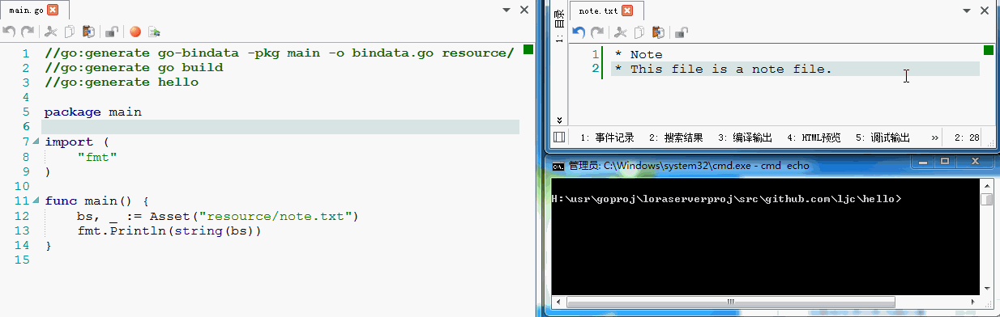

GO 项目，可整体生成一个运行文件到处跑，是极爽之事。但如果有资源文件要得带着跑，则破坏了这种体验。
例如下边这个项目结构，resource 目录下为资源文件，main.go 中会通过路径引用到这些资源文件，于是新的需求产生了。
|- hello
----|- resource
---------|- note.txt
----|- main.go
需求推进一步：将资源文件打包至运行文件中，在代码中仍然使用类似相对路径的引用方式使用它（这个很重要，使用在概念上保持一致）。
解决方案跟上：把资源文件数据转换成 GO 代码中的变量值存储，并提供函数可根据路径差数返回相应的数据。这样一来资源文件就变成了代码文件，又可以一个运行文件到处跑了。
于是，工具 go-bindata 就来了，它来完成将资源文件变成 GO 代码的工作。
go get -u github.com/jteeuwen/go-bindata/...
go install在 hello 项目目录下执行这个工具，就会生成 -o 指定的 bindata.go 代码文件。
go-bindata -pkg main -o bindata.go resource/此时，在 hello 目录下就多了 bindata.go 代码文件，然后，在 main.go 中，就可以使用以下方式指定相对路径参数来取得资源数据。
bs, _ := Asset("resource/note.txt")有了上述工具，当 note.txt 数据有更新时，就需要使用 go-bindata 工具重新生成代码文件再编译，可不可以形成一种专门的机制来规范化这类动作呢？
于是，再进一步，若能如此甚好：
（1）GO 项目的代码中，能自描述的表明有些相关依赖代码由需要由工具产生。
（2）支持简单的方式来完成自描述所表明的操作动作。
于是，go generate 应运而生，来看一下它的大概描述。
go generate 命令是 go 1.4 版新添加的一个命令，它将扫描与当前包相关的源代码文件，找出所有包含 "//go:generate" 的特殊注释，提取并执行该特殊注释后面的命令，命令为可执行程序。
是不是完美的实现了上述两项诉求。
（1）在源代码，即 GO 文件中，进行注释（自描述）即可指定要执行的工具命令。
除了 go-bindata 工具之外，类似的工具定是还有很多。工具抽象出来可认为就是可执行命令，指定命令甚是灵活。
（2）只要执行一条命令，即可自动扫描当前包相关的源代码文件来完成相应的执行。
这说明，不论有多少个这样的命令需要执行，它会负责找到并执行。
开头项目结构中，main.go 的完整代码如下：
//go:generate go-bindata -pkg main -o bindata.go resource/
//go:generate go build
//go:generate hello
package main
import (
"fmt"
)
func main() {
bs, _ := Asset("resource/note.txt")
fmt.Println(string(bs))
}注释部分即描述了三个动作，完成资源文件代码生成，编译与运行命令，当执行 go generate 时，三条命令执行下来运行的结果为显示 note.txt 中的文本内容。运行效果如下，当修改了 note.txt，执行 go generate，会自动完成重新生成代码，编译和运行。
